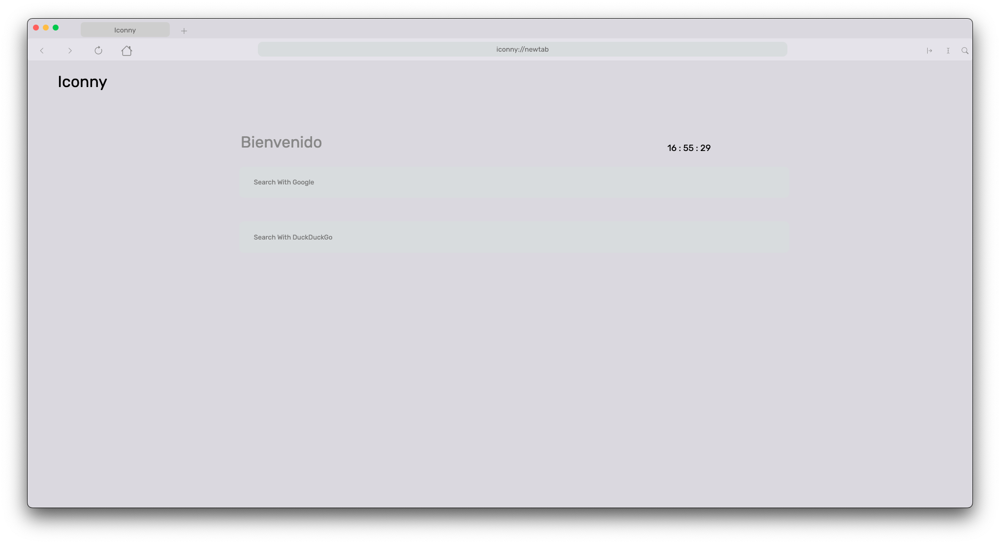
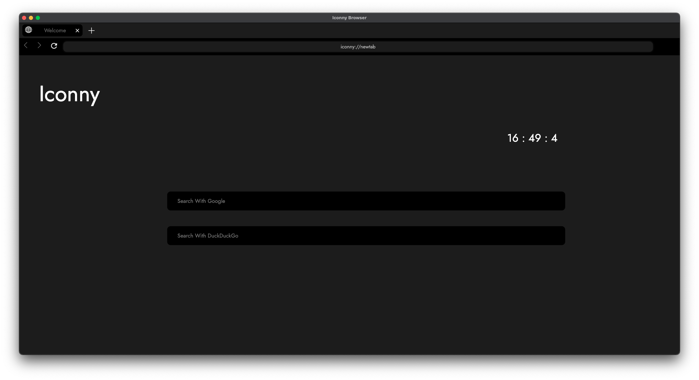
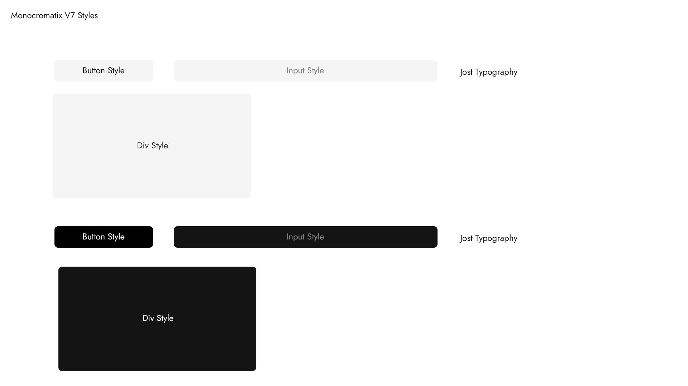

El dia de hoy Iconny Project presenta su nueva pagina mas limpia y funcional para la administracion del proyecto ademas presentando las dos nuevas ediciones y
proximas cosas que vienen para el proyecto Iconny.
Iconny for Mac
El Iconny para tu Mac

Iconny for Mac es una nueva edicion del proyecto Iconny. Es una edicion hecha para dar mayor comodidad y una mejor experiencia a los usuarios de Iconny en mac
Este posee una mayor estabilidad, una mejor interfaz adaptandose mejor a Mac, y un mejores condiciones de lo que es el menu global. Todavia el navegador sigue
en fase de pruebas, est pero esperamos pronto abrir una beta abierta para que este a disposicion de todos, aclarando que esta edicion siempre estara basada en
las ultimas versiones estables de Iconny y trayendo todas las caracteristicas existentes y nuevas
Ir a la pagina de Iconny for Mac
Iconny Risotto
La proxima generacion de Iconny

Iconny Risotto trae devuelta al modulo Electron-Navigation que habia sido reemplazado por iconny-navigation . Con esto los usuarios pueden sentir la experiencia
mas completa del navegador. Esta version no se entregan builds compiladas entonces es una version dev que en algun momento se espera que sea este la version principal
Ir a la pagina de Iconny Risotto
MonocromatixV7
La nueva version de la interfaz del navegador

Es un agrado presentarles un avance de lo que sera la nueva interfaz del navegador que es MonocromatixV7 una interfaz hecha para recordar las versiones antiguas del navegador
dando ese aire pero combinandola con la modernidad, esta interfaz es mas limpia, rapida y ligera que esperemos que llegue de forma estable al navegador en la version 22 (Menos Iconny Arcade e Iconny for Mac)
ya que estos usan sus propias interfaces
Esperamos que la nueva pagina y todo lo comentado aca sea de su agrado